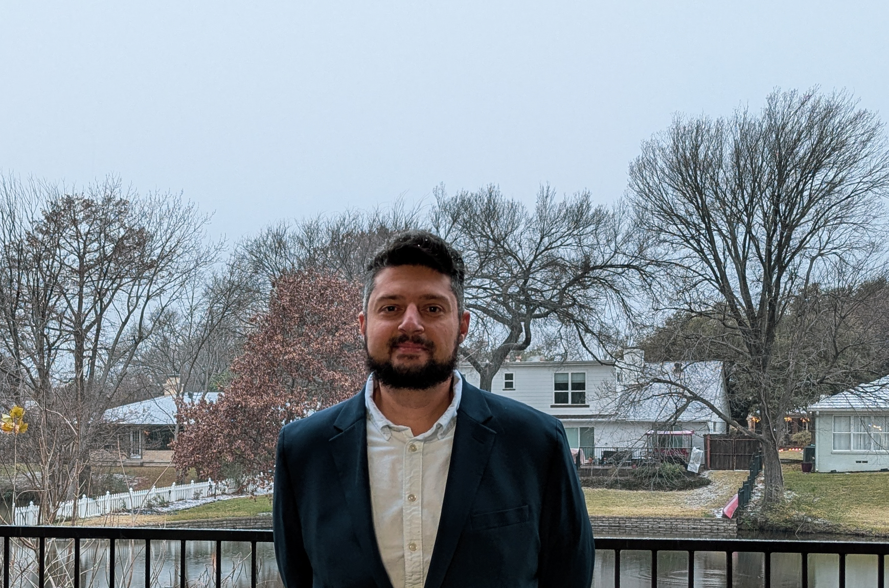

Islam Akef Ebeid

Assistant Professor of Computer Science at Texas Woman's University

Mission
|
I recently graduated from the University of Arkansas at Little Rock with a Ph.D. in Computer and Information Science, focusing on Data and Information Science. I worked under the guidance and mentorship of John Talburt and Elizabeth Pierce. Prior to that, I was a Ph.D. student at the University of Texas at Austin, where I worked with Ying Ding. Other mentors I worked with in the past years: Serdar Bozdag, Mariofanna Milanova, Ningnig Wu, Yan Zhang, Jacek Gwizdka, Abhra Sarkar, Mohammed Yassine Belkhouche, Carolina Cruz Neira, Dirk Reiners, Roger Fang, Jerry Wood, Larry Morell. |
iebeid@twu.edu, iaebeid@utexas.edu, iaebeid@gmail.com C: 512 921 1311, O: 940 898 2165 Texas Woman’s University MCL 412 Denton, TX 76204 |
University of North Texas, Denton, Texas (2022): Postdoctoral Training in Computer Science University of Arkansas at Little Rock, Little Rock, Arkansas (2014-2022): MSc, Ph.D. in Computer & Information Science The University of Texas at Austin, Austin, Texas (2017-2020): Graduate work at the Ph.D. program in Information Science Arkansas Tech University, Russellville, Arkansas (2011-2013): Professional MSc in Computer & Information Science Ain Shams University, Cairo, Egypt (2003-2008): BSc in Electrical & Computer Engineering The English School in Cairo (El Nasr School), Cairo, Egypt (2000-2003): General Secondary Diploma in Mathematics Certifications: FE, ITIL |
Data2AI4Science Laboratory @ TWU The Advacned Computing Center @ TWU Center for Refugee Interdisciplinary Studies and Education (RISE) @ TWU |
|
Research Interests
My research interests and experiences are centered around the role of data quality, curation, and engineering in artificial intelligence and their applications in the sciences. I develop and adapt methods and frameworks rooted in graph theory, natural language processing, machine learning, and deep learning. I apply the developed methods in information retrieval (computer science), data mining of digital libraries and information networks (information science), biomedical informatics (biology), non-profit studies (social sciences), and human-computer interaction (psychology). My vision is to aid and automate the process of scientific discovery and inquiry by developing ethical and artificially intelligent systems capable of integrating, cleaning, organizing, and mining scientific information automatically and efficiently.
Main research specializations:
Secondary research specializations:
My current skillset (Python, C\C++, Unix):
My older skillset (C\C++, Java, SQL):